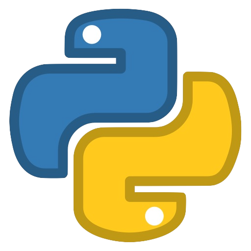
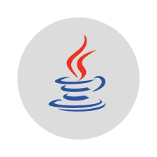
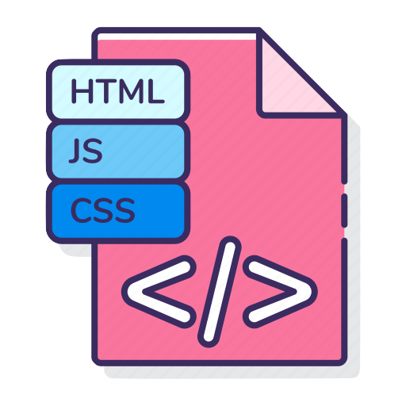
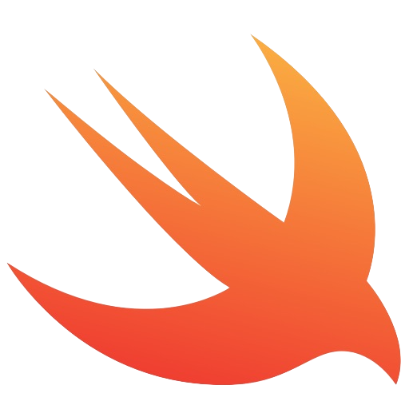
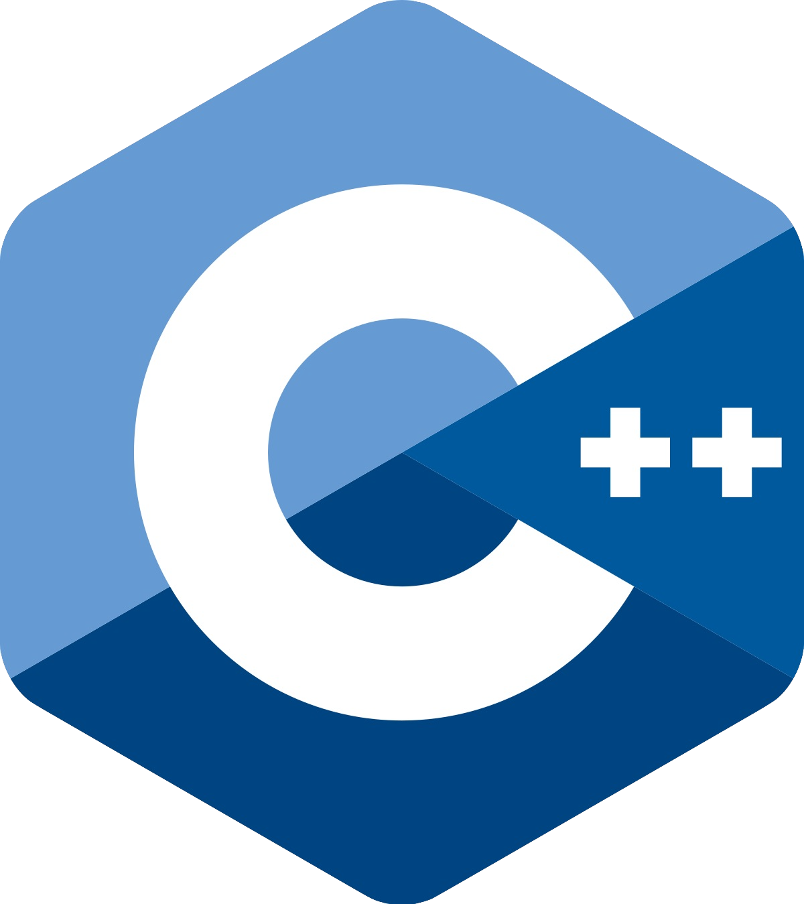

🎓 Education:
🎓 Education:
Bachelor of Science in Computer Science
The Pennsylvania State University, University Park PA
Graduation: May 2023
GPA: 3.54/4.00
Relevant Courses:
Multivariable Calculus and Vector Analysis
Physics: Mechanics, Electricity & Magentism, Fluids, Thermal, Wave Motion, Intro Quantum
🖍️ Skills:





Python
Java
HTML, JS, CSS
Swift
C++
👩💻 Work Experience:
Facilitated Study Group Leader
Women in Engineering - Penn State University, University Park, PA
Led a study group of freshmen and sophomore students taking first year physics mechanics
Created my own meeting plans and exam review session materials
Utilized positive communication skills and fostered a productive, open learning environment
Data Visualization Research Assistant
Penn State University, University Park, PA
Used the website Observable to create interactive notebooks in JavaScript
Designed project to help students understand Fourier Series
Collaborated with a team of two Professors, a Graduate Student, and four Undergraduates
📝 Leadership Experience:
Education Committee Member
HackPSU
Hosted a twenty-four-hour hack-a-thon with over 900 attendees
Collaborated with a team of eight students to recruit technical workshop leaders
Led initial interviews and secondary mock workshops
Managed five workshops at the event to ensure quality and smoothness
Team Member
Python Learning Organization (PyLO)
Worked with a group of four other undergrads to create biweekly python programming projects
Practiced dividing code segments, breaking a big assignment into smaller chunks due earlier, bring team members segments together to make a final product, and debugging blocks of code
Attended biweekly ‘toolkit talks’ to learn about python fundamentals and important concepts
Corporate Communications Chair
Penn State Society of Women Engineers (SWE)
Compiled corporate announcements into an easy-to-read newsletter for general body members
Fostered a welcoming and empowering community for women in the College of Engineering
Applied leadership and networking skills to recruit new general body members, manage volunteers, plan professional development events, and drive internal discussions about event improvement
🏆 Awards & Certificates:
Scholarship for Grace Hopper Conference – PSU Association of Women in Computing, Fall 202
Penn State Provost Award – Penn State, August 2020 thru May 2023
Gold Award Recipient - Girl Scouts of America, October 2019